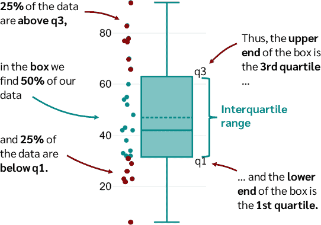
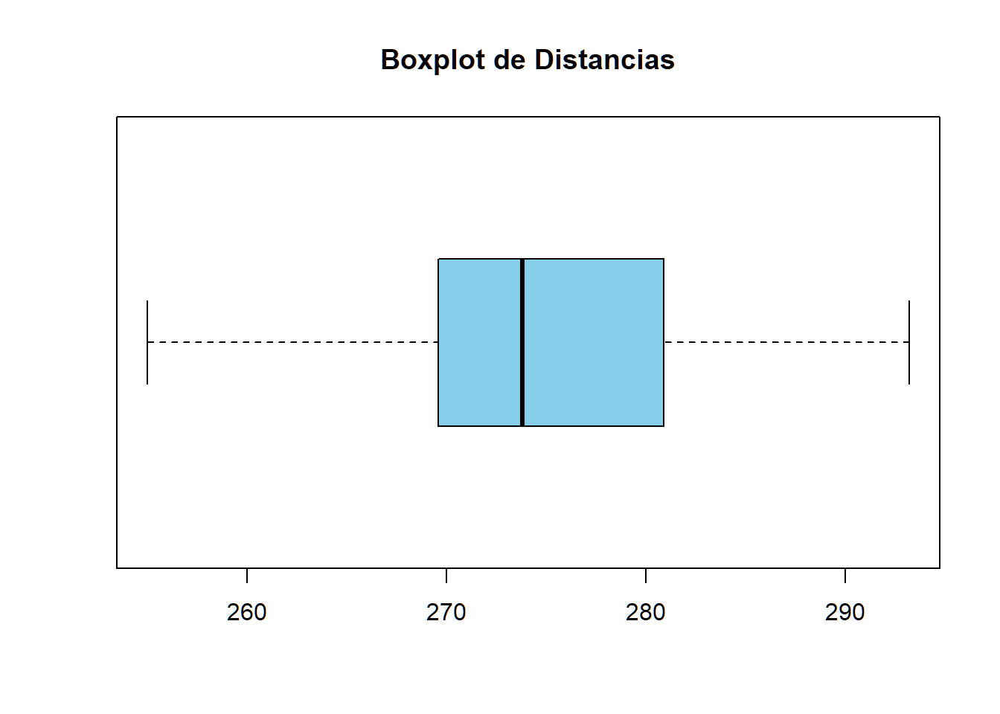
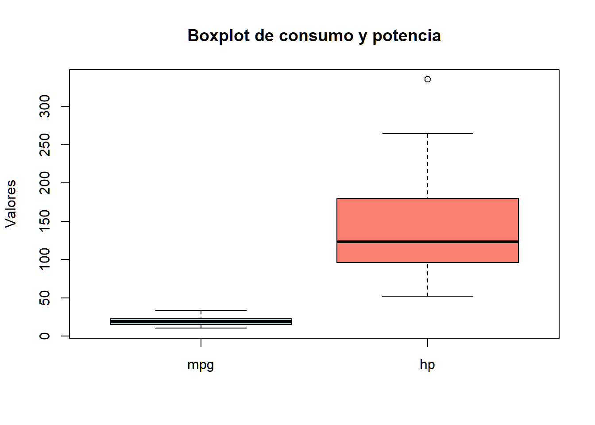
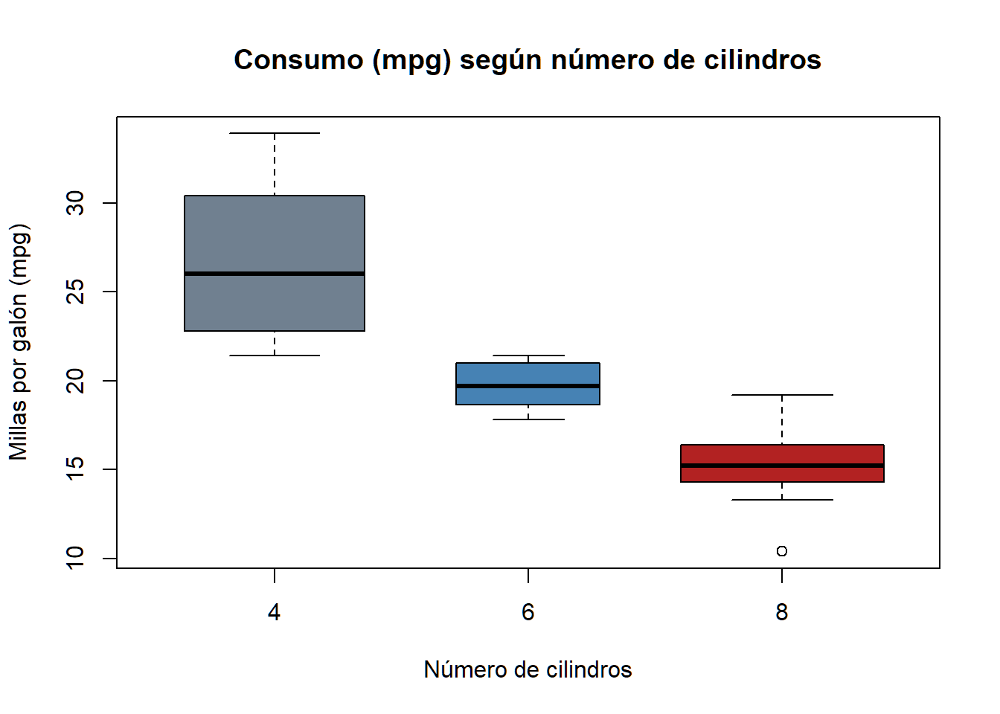

El diagrama de caja (boxplot) es una de las herramientas más potentes en estadística porque resume cinco números clave en un solo vistazo:
el mínimo,
el primer cuartil (\(Q_1\)), el 25% de los valores están por debajo de este valor
la mediana, también llamado segundo cuartil (\(Q_2\)), el 50% de los dfatos están por debajo (el 50% por encima)
el tercer cuartil (\(Q_3\)) , el 75% de los valores están por debajo de este valor (el 25% restante por encima)
el máximo,
además de identificar posibles valores atípicos (outliers).

La función principal es boxplot(formula, data = ...),
donde:
formula: Sigue la estructura
variable_numerica ~ variable_agrupadora. Por ejemplo:
mpg ~ cyl. (millas por galon - cilindros)horizontal = TRUE: Gira el gráfico
para una lectura más cómoda.varwidth = TRUE: Hace que el ancho de
cada caja sea proporcional al tamaño de la muestra (útil para ver qué
grupos tienen más datos).Vamos a utilizar el vector distancias que ya se utilizó
en gráficos anteriores:
# Datos de distancias
distancias <- c(
291.5, 274.4, 290.2, 276.4, 272.0, 268.7, 281.6, 281.6, 276.3, 285.9,
269.6, 266.6, 283.6, 269.6, 277.8, 287.8, 267.6, 292.6, 273.4, 284.4,
270.7, 274.0, 285.2, 275.5, 272.1, 261.3, 274.0, 279.3, 281.0, 293.1,
277.5, 278.0, 272.5, 271.7, 280.8, 265.6, 260.1, 272.5, 281.3, 263.0,
279.0, 267.3, 283.5, 271.2, 268.5, 277.1, 266.2, 266.4, 271.5, 280.3,
267.8, 272.1, 269.7, 278.5, 277.3, 280.5, 270.8, 267.7, 255.1, 276.4,
283.7, 281.7, 282.2, 274.1, 264.5, 281.0, 273.2, 274.4, 281.6, 273.7,
271.0, 271.5, 289.7, 271.1, 256.9, 274.5, 286.2, 273.9, 268.5, 262.6,
261.9, 258.9, 293.2, 267.1, 255.0, 269.7, 281.9, 269.6, 279.8, 269.9,
282.6, 270.0, 265.2, 277.7, 275.5, 272.2, 270.0, 271.0, 284.3, 268.4
)
# Boxplot simple de una sola variable
boxplot(distancias,
horizontal = TRUE,
main = "Boxplot de Distancias",
col = "skyblue")
## mpg cyl disp hp drat wt qsec vs am gear carb
## Mazda RX4 21.0 6 160 110 3.90 2.620 16.46 0 1 4 4
## Mazda RX4 Wag 21.0 6 160 110 3.90 2.875 17.02 0 1 4 4
## Datsun 710 22.8 4 108 93 3.85 2.320 18.61 1 1 4 1
## Hornet 4 Drive 21.4 6 258 110 3.08 3.215 19.44 1 0 3 1
## Hornet Sportabout 18.7 8 360 175 3.15 3.440 17.02 0 0 3 2
## Valiant 18.1 6 225 105 2.76 3.460 20.22 1 0 3 1Mediana:
La línea dentro de la caja indica la mediana, aproximadamente
19.2 mpg.
Rango intercuartílico (Q1-Q3):
La caja abarca aproximadamente de 15.4 mpg (Q1) a 22.8 mpg
(Q3).
Esto significa que el 50% central de los coches consume
entre estos valores.
Bigotes y valores extremos:
Los bigotes muestran los valores mínimo y máximo dentro de 1.5 veces el
rango intercuartílico.
En este dataset, hay coches con mpg muy bajos que
podrían considerarse valores atípicos.
Conclusión:
La mayoría de los coches tiene un consumo entre 15 y 23 mpg, pero
existen algunos coches muy eficientes (>30 mpg) y
algunos muy gastones (<12 mpg).
Podemos cambiar colores o comparar varias variables:
# Boxplot comparando mpg y hp (potencia)
boxplot(mtcars$mpg, mtcars$hp,
names = c("mpg", "hp"),
main = "Boxplot de consumo y potencia",
col = c("lightblue", "salmon"),
ylab = "Valores") 
Este tipo de gráficos permite ver dispersión y diferencias entre variables de forma muy visual
Representa en gráfico de cajas la variable “mpg” y “cyl” de la base de datos mtcars
En estadística, los boxplots son ideales para comparar
grupos. Vamos a analizar cómo varía el consumo de combustible
(mpg) según el número de cilindros (cyl) en el
conjunto de datos mtcars.
Nota: Para que R entienda
cylcomo grupos y no como un número, a veces es útil convertirlo a factor usandoas.factor().
## mpg cyl disp hp drat wt qsec vs am gear carb
## Mazda RX4 21.0 6 160 110 3.90 2.620 16.46 0 1 4 4
## Mazda RX4 Wag 21.0 6 160 110 3.90 2.875 17.02 0 1 4 4
## Datsun 710 22.8 4 108 93 3.85 2.320 18.61 1 1 4 1
## Hornet 4 Drive 21.4 6 258 110 3.08 3.215 19.44 1 0 3 1
## Hornet Sportabout 18.7 8 360 175 3.15 3.440 17.02 0 0 3 2
## Valiant 18.1 6 225 105 2.76 3.460 20.22 1 0 3 1# Representación: ¿Cómo cambia el consumo (mpg) según el número de cilindros?
boxplot(mpg ~ as.factor(cyl), # Le estamos diciendo: Dibuja el consumo de gasolina (mpg) en función de los cilindros (cyl)"
data = mtcars,
main = "Consumo (mpg) según número de cilindros",
xlab = "Número de cilindros",
ylab = "Millas por galón (mpg)",
col = c("slategray", "steelblue", "firebrick"),
varwidth = TRUE)
¿Qué observan en el ejercicio 3? Deberían notar que
a mayor número de cilindros, la mediana del consumo de combustible
(mpg) suele ser menor. ¡El boxplot nos permite confirmar
esta relación de forma visual inmediata!